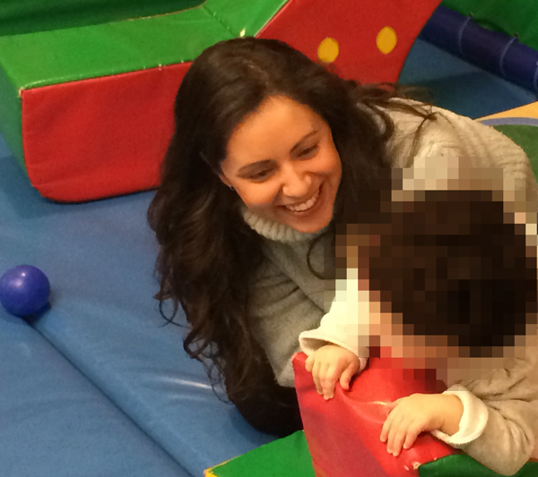

Adi Dwek Bonar
My professional journey started at 2002 and ever since then, I have been engaged with Psychoanalytical diagnosis and Psychotherapy of children, adolescences and their parents.
Professional experience
Throughout my years of training I was qualified practicing Play Therapy with young children, Dyadic Therapy (parent - child), family interventions, counseling to parents, adolescences Psychotherapy, conducting group therapy, writing professional reports for formal factors (military comities, court sessions, parole officers), providing guidance and supervision for multidisciplinary staff who works with children, adolescences and their parents and work in closed homes for adolescences and psychiatric clinics.
Main treatment spheres
Some of my fields of practice and treatment are immigration difficulties, depression and mood disorders, anxiety, compulsive behavior, eating disorders, behavioral disorders among children, ADHD, difficulties in social skills, addictions, life crises, post traumatic disorder, parents - children relationship, developmental disorders, mental illness, enuresis and encopresis and more.
Education
My professional training includes academic studies in Israel and United Kingdom.
2010 - 2013:
I began my post graduate studies in Psychoanalytic Psychotherapy in Israel at 'The Maggid Institute School of Psychotherapy' - The Hebrew University of Jerusalem. Due to relocation to the UK, I continued my studies at 'The Tavistock & Portman NHS Foundation Trust' in London. In addition, I participated in weekly workshops and lectures at 'The Institute of Psychoanalysis' in London.
2002 - 2009:
Throughout these years I was studying at 'The Tel - Aviv University' and completed my BSW and MSW (Bachelor and Master studies in Clinical Social Work). I was trained and specialized in clinical treatment of children and adolescences and also conducted a research in the field of children. My Thesis was published in 'Alimut' Journal in October 2009.
Courses and professional trainings
In conjunction with my academic studies, I took part in several courses and professional trainings, among them:
- Anna Freud Centre - Understanding parent - infant relationships and identifying risk.
- Substance abuse course - Tools for diagnosis, detection and intervention in youth using drugs and alcohol.
- 'Otsma' program - A Cognitive - behavioral group therapy training for the treatment of children suffering from Conduct Disorder and ADHD.
- TCI - Therapeutic Crisis Intervention System course.
Registration no. in the English HCPC - SW49925
Registration no. in the Israeli Social Workers register - 20499